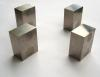

halfjack.txt
 order
simply, order, order, order, order, form, form, system, order
 restraint
restraint stopped, bound, obey, obey, control, requires, must, must, must
 moral_imperative
moral_imperative honour, honour, laws, law, law, honour, duty, duty, law, laws, law, law, duties
 abstraction
abstraction reality, probably, science, choose, choose, reality, them, exception, them, decided, them, except, them, them, real, reality, choose, reality, deciding, purposes, reality, real, knew, ideas, believe, abstract, ideal, choose, ideas, reality, decide, reality, fact, reality, decide, select, may, may, true, choose, reality, deciding, know
 social_behavior
social_behavior agree, agree, consensus, said, agreement, agreeing, consensus, consensus, consensus, bargain, consensus, said, agree, agrees, election, agree
 aggression
aggression critical, critical, threats, shattered, threat, strikes, break, weapon, shoot, disagrees, ridiculous
 instrumental_behavior
instrumental_behavior use, makes, make, make, makes, makes, buy, making, make, carry, select, try, buy, money
 descent
descent lean, fall
 anxiety
anxiety dangerous
 temporal_references
temporal_references time, today, often, then, when, then, then, already, when, when, when, then, when, then, everyones, everyone, again, then
 passivity
passivity peaceful
 concreteness
concreteness at, near, back, longer, amongst, at, at, here, back, here, towards, extent, out, side, where, where, where, here, towards, back, at, at
 general_sensation
general_sensation aware, perceive
 unknown
unknown odd
 vision
vision look, see, green, seen
 anality
anality shattered
agree, agree, consensus, said, agreement, agreeing, consensus, consensus, consensus, bargain, consensus, said, agree, agrees, election, agree